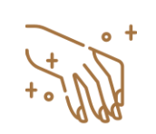
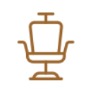

Bienvenue
chez Kilife BarberShop,
La barbière qui rend hommage aux
hommes qui prennent soin d'eux. Une
expérience dans une atmosphère
cosy ou l'on peut se
ressourcer.
Pourquoi vous allez nous aimer ?
Barberie de LuxeNous ramenons un nouveau concept : barberie à l'ancienne . Nous vous transmettrons notre savoir à travers un diagnostic personnalisé pour un soin à la carte (Shampoing, coupe, coiffage, rasage traditionnel au coupe-choux, rasage de crâne, soins, épilation à la cire chaude, serviette chaude et froide..) |
 Soins esthétiquesNotre équipe diplômée et dynamique prendra soin de vos mains et de vos ongles. Vos pieds ne seront pas en reste car une bonne pédicure est indispensable. Vous repartirez de chez nous d'un pas léger. Pour une expérience inoubliable, Kilife mettra à votre disposition un espace bien-être. |
 Détente et
|
|

(Translated by Google) Kane is an exemplary professional, and his suggestions for new styles of beard and hair left me very satisfied. His work in Brussels was undoubtedly the best in the city. In addition, she is an extremely friendly and positive person.
Thiago Casquilha
(Translated by Google) Kane is an exemplary professional, and his suggestions for new styles of beard and hair left me very satisfied. His work in Brussels was undoubtedly the best in the city. In addition, she is an extremely friendly and positive person.
Thiago Casquilha
(Translated by Google) Kane is an exemplary professional, and his suggestions for new styles of beard and hair left me very satisfied. His work in Brussels was undoubtedly the best in the city. In addition, she is an extremely friendly and positive person.
Thiago Casquilha

LA MAITRE-BARBIÈRE
Chez Kilife barbershop, vous serez reçu par Mrs KANE et sa superbe assistante KIKL. Elle vous feront découvrir dans la bonne humeur les différents services de KILIFE.
D’ingénieur à barbière,
la passion s’est joué au fil du rasoir
Kilife, Mot sénégalais qui fait référence à un homme d’autorité. Souvent utilisé pour désigner des dignitaires religieux, coutumiers et des autorités de l’Etat. Dans un sens plus large, ce terme s’applique à toute personne qui détient l’autorité.
Après plusieurs années en France et en Belgique, Seynabou Kane revient à Dakar. Diplômée à Paris en coiffure et barberie, elle a été formée par le grand maître de la coupe au ciseaux Jean-Louis Déforges et a fait ses preuves au prestigieux salon du Bon Marché
Après sa carrière réussie en logistique, sa passion pour la coiffure et la barberie a pris le dessus. A la suite de trois années, la voici reconvertie dans la coupe homme et barbe de luxe et preste aujourd’hui chez Bayer & Bayer, meilleur barbier de Bruxelles.